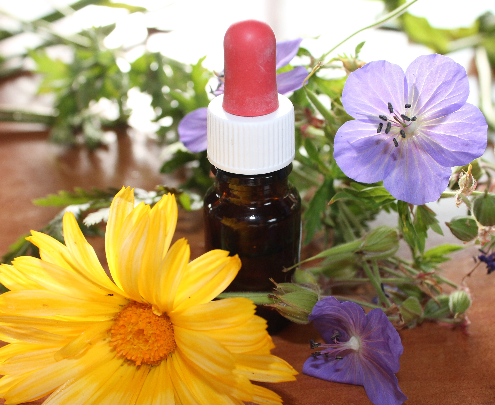

Armonía Natural para tu Bienestar
Descubre el poder de las Flores de Bach con Alejandro López. Una terapia personalizada para equilibrar tus emociones y reencontrar tu centro.
¿Por qué elegir la Terapia Floral?
Equilibrio Emocional
Gestiona el estrés, la ansiedad y los miedos de forma natural y segura.
Claridad Mental
Ayuda en procesos de toma de decisiones y momentos de cambio profundo.
Autoconocimiento
Una herramienta poderosa para conectar con tus necesidades reales.
Alejandro López
Terapeuta Floral Profesional
Mi misión es acompañarte en tu proceso de sanación emocional, utilizando el sistema del Dr. Bach para encontrar las esencias que resuenan con tu estado actual.
Cada consulta es un espacio de escucha activa y respeto, donde diseñamos juntos tu fórmula personalizada.

Inicia tu proceso
Al enviar este formulario, se abrirá un chat de WhatsApp para coordinar tu primera sesión.
Seguimiento de Avances
Registra cómo te sientes hoy para nuestra próxima sesión.